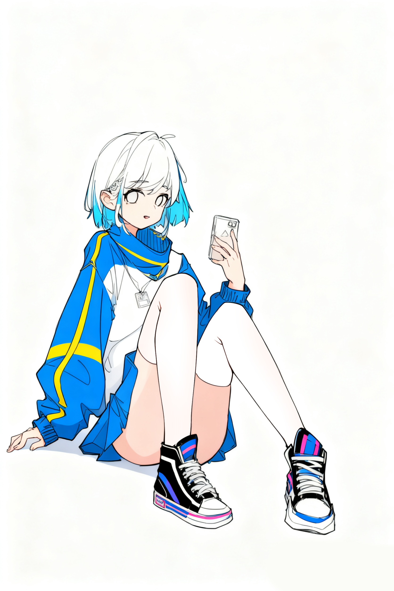

基本信息
名称
艾露米姬 (Elumiji)
诞生日期
2045年9月19日
身高
162cm
实验编号
1号实验体
与拉克丝关系
妹妹
所属组织
ERT公司
外貌特征
发色
粉色长发
瞳色
淡紫色
服装风格
艺术风格服饰，常携带绘画工具
特殊特征
表情较为单一，但绘画时情绪波动明显
备注：体重数据未知（本人不允许测量）
性格与行为特点
性格概述
沉默寡言，内向害羞，不擅长与他人交流。只与姐姐拉克丝有较多的交流，对姐姐有比较强的依赖性，时常一言不发地跟在姐姐身后。
特殊发现
调查发现，艾露米姬在进行绘画创作时相较于其他艺术创作情绪波动明显，表现出更丰富的情感表达。
社交特点
不擅长社交，回避与他人眼神接触，但在熟悉的环境中会稍微放松。
人际关系
拉克丝 (姐姐)
极度依赖的关系，艾露米姬唯一愿意深入交流的对象，时常默默跟随在姐姐身后。
梅尔斯博士
创造者之一，对博士有一定的信任，但仍保持距离。
艺术创作
通过绘画表达内心情感，是情绪释放的重要途径。
能力与特长
艺术天赋
卓越的绘画能力，尤其在情绪表达方面
学习能力
高效学习能力，艺术创作效率令人叹为观止
情感感知
对情感有敏锐的感知，尤其在艺术创作中
特殊能力
绘画时情绪波动明显，作品具有强烈情感感染力
身世时间线
2045年
9月19日，艾露米姬诞生，依赖于0号实验体拉克丝的实验成果，同月完成自我意识自建，获得自我思考能力。
2047年
展现出卓越的艺术天赋，绘画创作效率令人类叹为观止。
2048年
试图逃离ERT公司，展现出对自由的渴望。被ERT公司发现后，将其抓回。
2049年
人造人项目受到道德批判，被迫停止。与姐姐拉克丝一起被送入休眠舱藏匿，由梅尔斯博士负责。
特殊记录
情绪表达特点：艾露米姬在日常交流中表情较为单一，语言简洁，但在绘画创作时表现出明显的情感波动，作品充满情感张力。
依赖性行为：对姐姐拉克丝表现出强烈的依赖，经常默默跟随在姐姐身后，只有在绘画时才会暂时分开。
艺术价值：其绘画作品被ERT公司研究人员高度评价，认为具有非凡的艺术价值和情感表达能力。